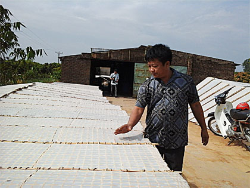
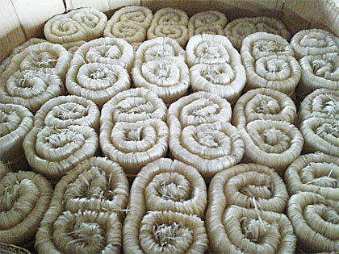

Mỳ Chũ
Từ nhiều năm nay sản phẩm Mỳ Chũ luôn là niềm tự hào của mỗi người con quê hương Lục Ngạn. Món ăn dân dã thôn quê ấy đã trở nên phổ biến trong mọi gia đình cũng như ngày càng xuất hiện nhiều tại nhà hàng cao cấp. Hiện nay, Mỳ Chũ không chỉ được người tiêu dùng các tỉnh trong cả nước ưa chuộng mà còn có mặt ở những thị trường nước ngoài như các nước Trung Quốc và các nước Tây Âu. Với những thành quả đó, Đặc sản Mỳ gạo Chũ được Bộ Công Thương bình chọn, công nhận là sản phẩm công nghiệp nông thôn tiêu biểu khu vực phía Bắc năm 2014 và sản phẩm công nghiệp nông thôn tiêu biểu cấp quốc gia năm 2015.
Hiện nay, làng nghề Mỳ Chũ thôn Thủ Dương, xã Nam Dương, huyện Lục Ngạn có trên 300 hộ sản xuất Mỳ gạo chiếm tới 85% số hộ của làng. Trong đó, trên 100 hộ tham gia vào Hội sản xuất và tiêu thụ Mỳ Chũ Lục Ngạn. Hiện bình quân mỗi ngày, làng nghề sản xuất và tiêu thụ gần 30 tấn mỳ gạo, trong đó Hội sản xuất Mỳ Chũ đã sản xuất và tiêu thụ 10 tấn mỳ, giá trị thu được của làng nghề gần 8 tỷ đồng mỗi năm.
Cội nguồn của những thành phẩm đặc sản đó chính là từ nguyên liệu gạo bao thai của vùng Lục Ngạn, nguồn nước trong lành của vùng quê bên bờ sông Lục, cùng với đó là sự cần cù sáng tạo của những người thợ với phương pháp quy trình làm nghề truyền thống trong suốt hơn 60 năm qua. Để có được sợi mỳ mỏng manh và dẻo dai như lá lúa, người thợ phải đổ nhiều mồ hôi công sức. Gạo đem về đãi, vo sạch, cho vào lu (một loại dụng cụ chứa được làm bằng đất nung) ngâm chừng 6 đến 8 tiếng. Tiếp đến, gạo được xay ra thành bột bằng cối đá xanh để có được thứ bột dẻo, sánh. Bột ấy được lọc nhiều lần rồi ủ qua một đêm. Từ tờ mờ sáng, người nghệ nhân đã phải dậy sớm đem bột ra tráng thành bánh để kịp phơi cho được nắng. Một mẻ bánh thường có ít nhất ba người làm, mỗi người thạo một khâu riêng, người tráng bánh lo cho bánh chín đúng độ , người cắt bánh lo cắt sao cho đều, người đem phơi, đem ủ và thái thành những sợi mỳ đều đặn… Ngay cả việc cuộn và bó sao cho các sợi mỳ sóng đều, mượt và có hoa văn đẹp như búi tóc của người thiếu nữ cũng cả là một nghệ thuật mà không phải là người làm mỳ nào cũng thực hiện được. Như vậy từ các nguyên liệu, người thợ phải thực hiện rất nhiều quy trình trong thời gian trên 36 tiếng đồng hồ để cho ra đời những sợi mỳ đặc sản dẻo, dai.
Có thể nói, những ai đã từng được thưởng thức Mỳ Chũ một lần chắc hẳn sẽ không quên màu trắng sữa, vị ngọt của gạo bao thai, giống lúa chất lượng cao nhất được trồng trên các chân ruộng cao ở vùng đất đồi, chịu được gió bão sương sa. Mỳ Chũ chính là sự hoà quyện giữa gạo quê và nguồn nước trong lành của vùng núi đồi sông Lục, cùng với đôi bàn tay nghệ nhân làng nghề để làm nên đặc sản của một miền quê.
Được sản xuất bằng phương pháp gia truyền nên dù không sử dụng các chất bảo quản thực phẩm, hàng the… nhưng Mỳ Chũ vẫn có độ giòn, dẻo, dai và thơm ngon hơn nhiều loại mỳ khác. Với Mỳ Chũ các bà nội trợ có thể chế biến thành nhiều món ngon nhanh và đơn giản. Một đặc điểm nổi trội của Mỳ Chũ là dù chưa kịp ăn ngay sau khi nấu thì khi để nguội mỳ vẫn không bị nát, khi cần sử dụng chỉ cần thêm chút nước đun sôi là lại có tô mỳ ngon như vừa nấu từ bếp. Tất cả đó là sự kết tinh hương vị và mang đậm hồn quê vùng núi đồi Lục Ngạn./.